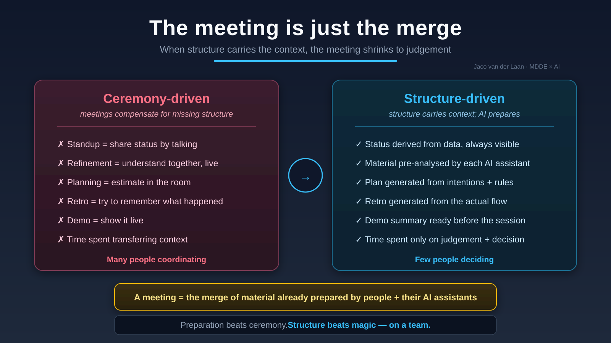

A new way of working
When structure carries the context, your team stops spending meetings on catch-up. People arrive prepared, the meeting shrinks to judgement, and the plans, retros and summaries are generated — and validated — underneath.
The shift
Standups, refinements, plannings, retros — much of it is manual context transfer, repeated daily, because the context was never structured. Structure it once, and the synchronous time is freed for the one thing only people do.

How it works
Communication, intentions, rules and validated data are structured and interact. Status is derived from the data, always visible — not announced in a standup.
Each person's AI assistant has already analysed the material — facts, data, rules — and drafted what's worth discussing and deciding.
Plans, retros and demo summaries are generated and validated underneath. The meeting is for judgement and decision — nothing else.
The part that makes it safe
A generated plan nobody checks is worse than a boring meeting. The validation layer is not optional — it's the reason this isn't reckless.
Rules generate the plan; plausibility rules check it against what's already known; on a mismatch, it flags instead of guessing. The same discipline that keeps a regulated bank's data trustworthy is what lets a team trust a generated plan. Structure generates. Rules validate. Then a human decides.
To be clear
It's not fewer people, and it's not AI making the decisions. It's a team that spends its scarce synchronous time on judgement instead of catch-up.
Less ceremony means more deep work and sharper calls — not a smaller or absent team. The human is at the wheel; the structure is underneath. If anything, it asks more of people: arrive having actually thought, with a position, prepared. Smart, dedicated people who come together well prepared.
I'm looking for teams genuinely ready to change how they work — not just which tool they use.
Start a conversation